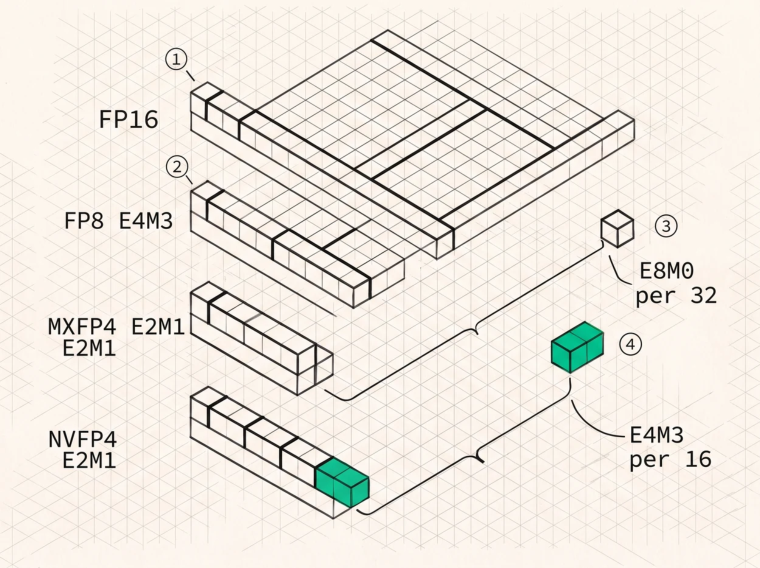

KV Cache Quantisation
Why quantise the KV cache
Run the arithmetic from Chapter 1 and the case makes itself. Qwen3-235B-A22B at a million tokens needs 192 GB of FP16 KV for one sequence, 96 GB in FP8, 48 GB in FP4. Set that against the weights, which for a 235B model in FP8 are about 235 GB, and a 288 GB MI355X has no room at all for the FP16 cache and none for the FP8 one either. Getting a million-token sequence onto one package means fourbit weights, about 118 GB, with a 96 GB FP8 cache beside them. KV precision and weight precision are the same budget, and at long context they are competing for it.
Speed follows capacity directly, because decode attention is bandwidth-bound and halving the KV bytes roughly halves the time the kernel spends moving them. “Roughly” is doing real work in that sentence, as the measured 1.47× below will show.
FP8 in OCP E4M3
FP8 in the OCP E4M3 format is the production-ready choice today, and the format is 1 sign bit, 4 exponent bits, 3 mantissa bits. The fn suffix you see in framework type names like float8_e4m3fn means finite , this variant has no infinities and a single NaN encoding, which buys one extra magnitude of dynamic range. Descriptions of E4M3 as having “no sign bit in the exponent” turn up occasionally and aren’t a meaningful statement about anything.
Accuracy lands around 2% relative L2 error on realistic tensors with per-block scales, comfortably inside the noise floor for most tasks, and end-to-end FP8 KV cache is generally reported as quality-neutral on standard benchmarks. Both vendors have native conversion instructions and in-datapath scaling in the matrix core. Store K and V in E4M3 with a scale factor per token, or per block of tokens per head, since per-tensor scales are cheaper and noticeably worse while per-token is the usual sweet spot.
Now the detail that decides whether any of this is a win, because the first attempt in mainarch made FP8 KV slower than FP16, at 0.83 to 0.91×. The kernel decoded E4M3 with explicit bit manipulation, and the per-element decode cost, the tens of cycles per token the literature warns about, exceeded the bandwidth it saved. Two changes turned that into a 1.47× win.
Use the hardware conversion instruction rather than manual bit twiddling. And, more importantly, pull the per-token scale factor out of the dot product . Because q·(s·K) = s·(q·K), the scale can be applied once per token after the reduction instead of once per element before it, and the same trick works on the value side by scaling P by scale_v[t] before accumulating.
That algebraic rearrangement, one scalar multiply per token instead of d multiplies per token, is the whole ballgame. Any quantised-KV kernel that dequantises element-wise inside the inner loop will underperform the unquantised version it was meant to replace.
Four-bit: MXFP4 and NVFP4
Four-bit KV halves the bytes again, and two block formats matter.
MXFP4 , the OCP microscaling format, uses E2M1 elements, 1 sign bit, 2 exponent, 1 mantissa, with one E8M0 scale per block of 32. E8M0 is exponent-only, so the scale is exactly a power of two, 2^(x−127) , which makes scaling exact but coarse.
NVFP4 uses the same E2M1 elements with an E4M3 scale per block of 16 , plus a second-level FP32 per-tensor scale. Two changes from MXFP4, half the block size and a scale with mantissa bits, and both reduce error. NVIDIA reports NVFP4 outperforming both MXFP4 and INT4 across models, with quantisation-aware distillation closing most of the remaining gap to BF16 for weights.

O
1FP16 is one sign bit, five exponent, ten mantissa. Sixteen bits per element and no scale to manage. O2FP8 E4M3 is one sign, four exponent, three mantissa. The fn suffix in framework type names means finite, so no infinities and a single NaN encoding, which buys one extra magnitude of range.O
3MXFP4 packs E2M1 elements and shares one E8M0 scale across 32 of them. E8M0 is exponent-only, so the scale is exactly a power of two, which makes it exact but coarse.O
4NVFP4 shares an E4M3 scale across 16, plus a second-level tensor scale. Half the block and a scale with mantissa bits, which is why it roughly halves MXFP4’s error at the same bit width.
Measured on synthetic tensors with realistic outlier structure, Gaussian with 2% outliers, mainarch’s calibration put raw MXFP4 at 15 to 16% relative L2 error and NVFP4 at 9.2%, an improvement of roughly 45% that still leaves four-bit several times worse than FP8’s 2%. Those are format error numbers on synthetic data rather than end-to-end quality numbers, so treat them as a ranking rather than a prediction.
The honest status for KV cache specifically in 2026 is that FP8 is the production default, four-bit KV works with additional technique, meaning smoothing or mixed precision for recent tokens or keeping outlier channels higher, and is deployed by teams who have measured it on their own traffic, while raw four-bit KV with a naive per-block scale isn’t something to ship without task-specific evaluation. Note also
that four-bit is further along for weights than for KV cache, because the distributions and the error propagation paths differ, and results from one don’t transfer to the other.
Smoothing, or making the score path quantisable
The SageAttention line of work is the reference for quantised attention, and its central observation is that the key tensor carries large per-channel offsets and outliers, so a block scale ends up spending most of its range representing a bias rather than the signal.
SageAttention introduced smoothing K, subtracting the channel mean before quantisation and correcting afterwards. SageAttention2 added smoothing on the query side and per-thread quantisation granularity with INT4 QK. SageAttention3 brings microscaling FP4 attention to Blackwell, inherits K-smoothing from the earlier work, and reports around 1,038 TOPS on an RTX 5090, roughly 5× the fastest FlashAttention on the same part.
Attribute smoothing to the line rather than to v3 alone, and note the scope, since this work targets the attention score computation in FP4, which overlaps with but isn’t the same thing as storing the KV cache in FP4.
Hardware dequantisation paths
On AMD CDNA4 , V_CVT_SCALEF32_PK_F32_FP4 and its relatives convert packed FP4 to FP32 applying a scale, running on the vector ALU. In a decode attention kernel the VALU has spare issue slots while the memory system is the bottleneck, so that’s close to free in practice, but “close to free” is a statement about a specific kernel’s issue-slot budget rather than a property of the instruction, so measure it.
On NVIDIA Hopper and Blackwell , block scales get applied in the tensor-core datapath during the matrix multiply, so there’s no separate dequantisation step at all, provided the operation is shaped to use the tensor core, which decode’s M=1 GEMV isn’t. Which is why decode paths on both vendors often end up using vector-ALU conversion anyway.
The accuracy against compression trade
| FORMAT | BYTES/ELEMENT | VS FP16 | REL-L2 (SYNTHETIC) | KV STATUS 2026 |
|---|---|---|---|---|
| FP16/BF16 | 2 | 1× | 0 | Baseline |
| FP8 E4M3 + per-token scale | 1 | 2× | ~2% | Production default |
| MXFP4 (E2M1 + E8M0/32) | 4.25 bits | 3.8× | ~15% | Needs technique |
| NVFP4 (E2M1 + E4M3/16 + FP32) | 4.5 bits | 3.6× | ~9% | Needs technique |
| FP4 + smoothing / mixed precision | 4.25–4.5 bits | 3.6–3.8× | ~3–5% | Deployed with evaluation |
Neither format reaches 4× because of the scale, and the two differ. MXFP4’s E8M0 scale spread over 32 elements costs a quarter of a bit, giving 4.25 bits per element and 3.8× against FP16. NVFP4’s E4M3 scale over 16 elements costs half a bit, giving 4.5 bits and 3.6×, plus one FP32 per-tensor scale that rounds to nothing. NVFP4 buys its lower error with slightly worse compression, which is the trade rather than a free win.
When to quantise
Most valuable at long context where KV dominates, in multi-tenant serving where it buys concurrent sequences per GB, and anywhere memory is the binding constraint. Least valuable at short context, where the cache is small and the scale bookkeeping is pure overhead, and in prefill, which is computebound and writing the cache rather than re-reading it.
One asymmetry is worth designing around. You can store recent tokens at higher precision and older tokens lower, because recency correlates with attention weight, and in a paged cache that’s cheap to implement since precision becomes a per-block property. It’s the most reliable way to get most of fourbit’s capacity benefit at close to FP8’s quality, and Chapter 32 returns to it.
Key Concept
KV quantisation is the most leveraged memory optimisation in long-context inference. FP8 E4M3 with pertoken scales is production-ready and gives a measured 1.47× on real decode, provided the scale is factored out of the dot product and hardware conversion instructions do the work. A kernel that dequantises per element inside the inner loop can be slower than FP16. Four-bit halves bytes again, NVFP4’s block-16 E4M3 scaling roughly halves MXFP4’s error and smoothing narrows the rest, but fourbit KV still needs evaluation on your own traffic.
Exercises
Show that per-token scale factors can be moved outside the QK dot product, and state precisely what changes if the scale is per-channel instead.
Compute the effective bits per element for MXFP4 and NVFP4 including scale overhead. At what block size does the scale overhead exceed 10%?
Explain why halving KV bytes gives 1.47× rather than 2× on the measured kernel. Which components of the runtime don’t shrink?
Build: quantise a real key tensor to E4M3 with per-tensor, per-token, and per-block scales and measure relative L2 error for each. Repeat after subtracting the per-channel mean and quantify what smoothing buys.